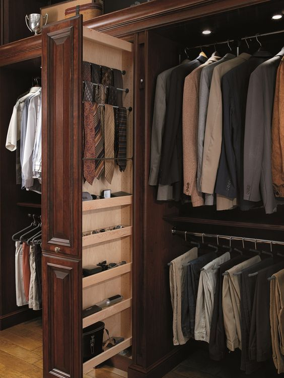
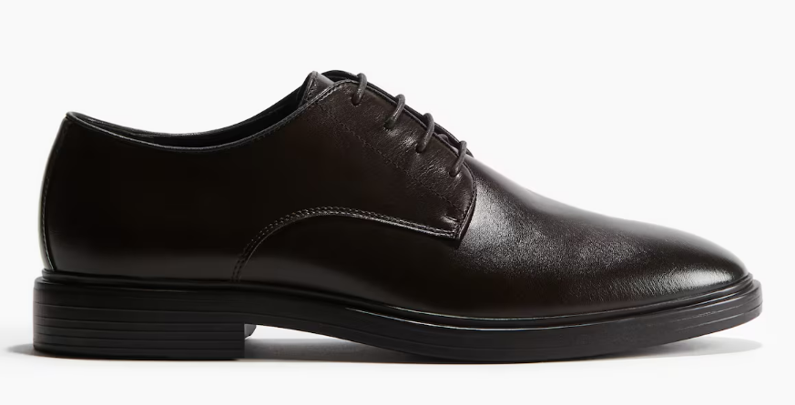
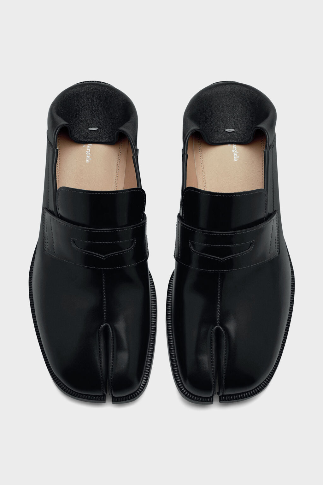

Polished, not stiff.
Button-down or knit, chinos or trousers, loafers or derbies. A blazer helps, but a full suit usually is not required.
Every man needs one formal lane that works. Dark suit, clean shirt, black derbies, loafers, boots. Fit before everything.
Fit first. Then fabric. Then details. Brand comes last.
Formal attire is not about dressing louder. It is respect for the room, the host, and the occasion.
Button-down or knit, chinos or trousers, loafers or derbies. A blazer helps, but a full suit usually is not required.
Dark suit, crisp shirt, tie, leather dress shoes. Think interview, client meeting, boardroom, or conservative office.
Dark suit, button-up, loafers or derbies. A tie can help, but fit matters more than extra accessories.
Dark suit or tux lane. Crisp white shirt, polished dress shoes, quiet accessories. If the invite is unclear, ask.
Buy slowly. Keep colors easy to combine.

Own three: black, charcoal, navy. Black for nights, charcoal for work, navy for everything else.
Polo Ralph Lauren is the clean baseline. Start with white, light blue, and blue stripe.
Black, navy, charcoal, white, tan, dark brown. Keep the palette quiet.

Jimmy Choo if you want the elevated lane. Plain black leather first.

Black and dark brown first. Maison Margiela Tabi loafers are the sharper statement version when the rest of the outfit is quiet.